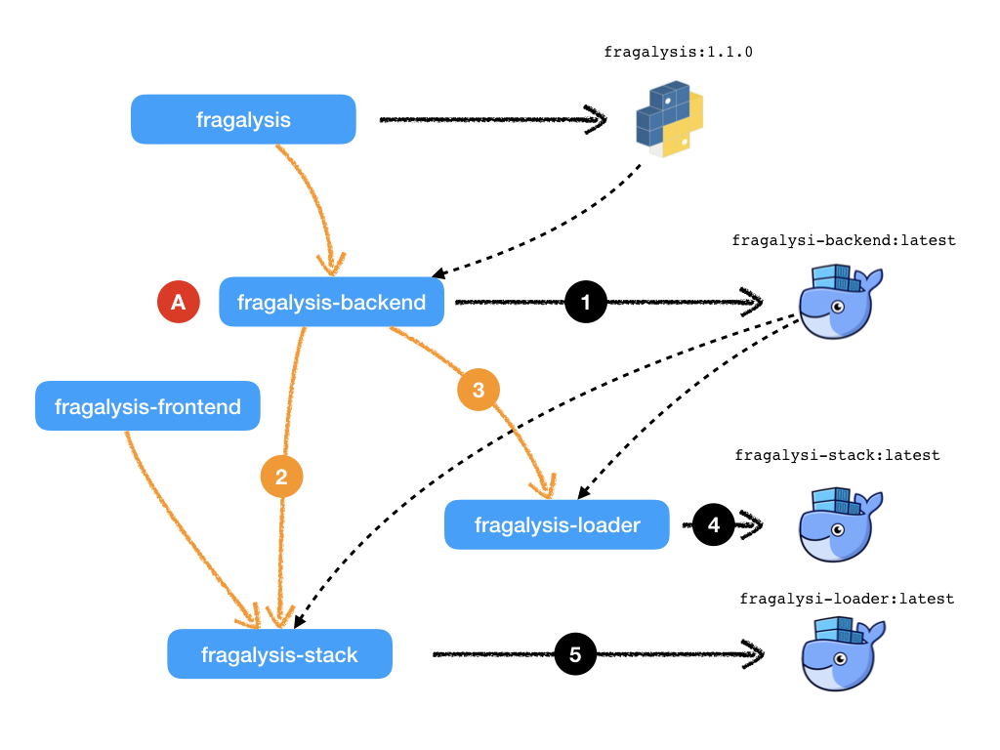

Travis¶
The role of Travis in the Fragalysis Stack build process.
The OpenShift deployment of the Stack used Jenkins as the CI/CD build framework, relying on the container registry and build capabilities provided by OpenShift. Kubernetes has no registry as such and although you can install Jenkins it’s role is diminished as it’s more of White Elephant than and clear asset in Kubernetes.
Instead, in the Kubernetes world, without a clear industry standard merging as a CI/CD framework, we switch to relying on Travis in order to test and build the Stack images.
Travis is an external cloud-based service, free for open-source projects.
Travis is an external cloud-based service, free for open-source projects
that is mature used by many to test and build software. It is programmed
through the use of .travis.yml files placed in the root directory of
GitHub projects.
Why not use Jenkins?
Jenkins is indeed powerful but it relies on Agents in order to run Jobs. Setting these agents up requires effort. Travis runs in the cloud where it has agents, of all kinds, that simple and easy to configure.
Jenkins is a complex service with a need for persistence (volumes) that would eat away at the Kubernetes cluster in both CPU, disk and cost. Travis does not require resources in the Kubernetes cluster
Jobs control in Jenkins is defined through the Groovy language. It’s powerful but it’s yet another language and its syntax is not the easiest to master. Travis is programmed in YAML, a syntax many are already familiar. It is simple, and easy to read.
Management and configuration of the Jenkins server is not trivial and incurs management and maintenance costs. Travis needs no management.
Fragalysis Stack Repositories¶
The stack is distributed as two container images, a Loader and a Stack. There are five GitHub repositories involved in the build of these two images:
fragalysis
fragalysis-backend
fragalysis-frontend
fragalysis-loader
fragalysis-stack
The by-product of each repository is: -
- fragalysis
The output of the
fragalysisrepository is a small package of Python code, written to PyPI when the repository is tagged. The package is part of thefragalysis-backendimage’s Python requirements.- fragalysis-backend
The output of the
fragalysis-backendis a container image, written to Docker Hub. This image is used as aFROMimage in both the Loader and Stack. The backendFROMimage is based oninformaticsmatters/rdkit-python-debian:latest.- fragalysis-frontend
The output of the
fragalysis-frontendis nothing. The code is instead cloned into the container image of thefragalysis-stackwhen it is built.- fragalysis-loader
The output of the
fragalysis-loaderis a container image, written to Docker Hub. It uses the image produced by thefragalysis-backendas it’sFROMimage.- fragalysis-stack
The output of the
fragalysis-stackis a container image, written to Docker Hub. Like the Loader it uses the image produced by thefragalysis-backendas it’sFROMimage.
Build example (master)¶
Let’s see how Travis works for the Fragalysis Stack by exploring a simple example, where a user-change to a repository’s master branch results in the stack being re-built, illustrated by the following diagram.
The diagram illustrates a user making a change (A) to the
master branch of fragalysis-backend repository. The following steps
occur, in approximate order: -
Travis detects the change and creates a server on which the build (and testing) takes place. The result of the build is a docker push to Docker Hub. The image pushed is
xchem/fragalysis-backend:latestwhere the docker user isxchem, the project isfragalysis-backendand the tag islatest(the significance of these values will become important later).At the end of the build of
fragalysis-backendTravis is configured to trigger a build in the remote repositoryfragalysis-stack1 . There’s a new backend image so the stack, which depends on it, is instructed to build.As the Loader also depends on the output of this build Travis also triggers* the
fragalysis-loaderto build.The
fragalysis-loaderTravis session (triggered by the backend) builds and as its output is a container image it is pushed to Docker Hub. The image pushed isxchem/fragalysis-loader:latestThe
fragalysis-stackTravis session (triggered by the backend) builds and as its output is a container image it is pushed to Docker Hub. The image pushed isxchem/fragalysis-stack:latest
More scenarios (here be Dragons)¶
That’s a simplistic illustration of a build chain from one master
branch rippling through the dependent builds on the master branch.
But software development’s more complicated than just changes to the
master branch and, in these cases, Travis will need some help.
How does Travis know which repos to trigger?¶
This is the responsibility of the repository owner. Our Trigger Travis
utility is used to simplify the calls the the Travis API but the
owner of each repository needs to know which repositories to trigger
and simply adds calls to the Trigger Travis at a suitable point in their
own .travis.yml file.
The mechanism is essentially a push-driven trigger from upstream repository to downstream. A downstream repository cannot monitor upstream repositories, the author has to know which repositories depend on their code.
Because Jenkins runs continuously it does allow Jobs to watch other builds (Jobs) that are upstream and trigger downstream builds (Jobs). But this advantage is considered insignificant compared to the disadvantages (discussed earlier).
How does a repo know what container tag to use?¶
By convention, in a CI/CD sense, automated builds on master produce
container images tagged latest. The Travis build can be easily
organised to produce a tag that is the branch name if the build is on a branch.
Branch 1-defect might therefore produce images that are pushed to docker
using the tag 1-defect
How do I instruct the downstream to use may image?¶
In our example we’ve assumed the branch being manipulated is master
and in this very simple workflow we want all the dependent master
branches to build resulting in their own latest images.
But what if you’re working on a defect on the backend, on a branch
called 1-defect? Do you want to trigger a rebuild of the Stack’s
latest image from fragalysis-backend:latest? No, you want the
stack to use fragalysis-backend:1-defect as its FROM.
So this is where the Trigger Travis utility, the Travis REST API
and your .travis.yml file in both your upstream and downstream
repositories become a little more complex…
The downstream (Stack) repository’s .travis.yml file is configured to
expect a FROM_IMAGE environment variable, which has a default value of
xchem/fragalysis-backend:latest if it is not provided. All the upstream
repository’s .travis.yml has to do is ensure that it injects its own
value for FROM_IMAGE. It is able to do this because Travis triggers
allow variables to be injected into the triggered build.
In our case we can pass in the variable FROM_IMAGE=xchem/fragalysis-backend:1-defect
and the triggered build will produce for us an image based on our 1-defect.
Brilliant!
But hold on - the stack wil be based on 1-defect while producing
a latest.
We can add more logic to our downstream repository so that the tag it uses
is actually based on the tag found in the FROM_IMAGE value.
Simple … ish
- But what if you forget to set the variable?
After all, when you create your backend branch you need to adjust your own Travis settings to provide a value for the variable. If you forget (and you will) you’ll end up causing a new build of
latestin the downstream projects that contains your (probably untested) patch. Not what others might expect fromlatest.
What if I want to trigger a non-master downstream branch?¶
That’s a very good question.
If I have a 1-defect branch in the upstream build and I want to trigger
the 1-defect branch in the downstream project?
It’s solved by the Trigger Travis utility, which allows you to pass in
a branch definition so that Travis build the branch you name rather than
the default master.
Brilliant!
If you’re clever enough you could even pass this value on to downstreams of the downstream, but that doesn’t apply in our case and starts to get complex very quickly.
- But what if you forget to set the variable?
Mmmm … OK … I see a pattern emerging here.
Basically this is where it all gets rather messy, complex and complicated and unless you are very, very disciplined in your project organisation and development you should be treading extremely carefully.
I have a fork of the frontend, how do I…¶
Here we’d like changes in a branch of a fork of one repository to trigger the build of a branch in the fork of another repository…
STOP! It’s just getting mind-bendingly complex.
- Mmmmm
We’re starting to sink deeper into a very complicated world.
Hold on - Jenkins seemed fine. Have we lost something useful?
Yes … but that usefulness came with significant cost: -
Jenkins could do this easily because it was cloning the repositories and building them, while pushing to Docker registries while armed with keys to the xchem Docker Hub account. We had the secrets safely stored in Jenkins. That is something we cannot achieve in the Travis world - we can;t give everyone a key, that’s not secure.
Also, creating OpenShift deployments per developer and configuring Jenkins takes several hours, probably half a day.
So here we have a situation that was easily solved in Jenkins and OpenShift that becomes enormously complicated (and probably impossible or at the very least extremely undesirable) in the Travis World.
It’s here we have to think about how developers develop code for the Fragalysis Stack and Kubernetes.
We need an altogether simpler approach.
Development Recommendation¶
For the main production images (latest and tagged) we…
…utilise Travis build triggers in the main
xchemrepositories. The build triggers are used exclusively for the automatic production oflatestimages on themasterbranch.Similarly, we build tagged images on the main
xchemrepositories based on the presence of a release (or tag) in the repository.fragalysis-backend:1.0.0is automatically produced when the owner applies the tag1.0.0to thefragalysis-backendrepository.
The main stack deployment is therefore automatic, continuous, fast but, above all, simple.
Individual developers…
…work on branches of the main repositories or on branches of forks of the main repos. No images are automatically produced from changes to branches or forks.
Developers are responsible for building their own container images and for pushing them to Docker Hub. Tina working on branch
1-defectin a fork of thefragalysis-frontendrepository is responsible for producing the correspondingstackimage by (ideally) also forking and manipulating thefragalysis-stackrepository so that it clones her frontend code rather than the code fromxchem/fragalysis-frontend.In order to deploy their project to Kubernetes (the subject of another Guide), users may push their container image to any Docker Hub namespace, project or tag. Tina can push her image as
xwz/stack-tina:1-defectif she chooses. This works because she will have deployed her project to Kubernetes (now a developer responsibility) configured tso her cloud deployment’s stack should run using the imagexwz/stack-tina:1-defect(rather than the defaultxchem/fragalysis-stack:latest). Tina can also select the version of the database she wants to use and the URL of the graph database. When she’s done she destroys the Kubernetes project.
The above places significant responsibility on the developer - they have to create the images, they have to push them, they have to create the Kubernetes deployments (subject of another guide) and they have to understand the build process.
But, this is a significantly simpler and a relatively pain-free route to supporting unlimited multi-developer deployments than could be achieved by any automatic system in the timescale available.
After all, if you’re expect to have 20 or 30 developers all on different forks and branches, all developing different aspects of the code, an automatic build system would be enormously complex, fragile and costly to maintain.
Footnotes
- 1
This is achieved through a POST operation to the Travis REST API naming the _downstream_ repository and passing in some extra material.